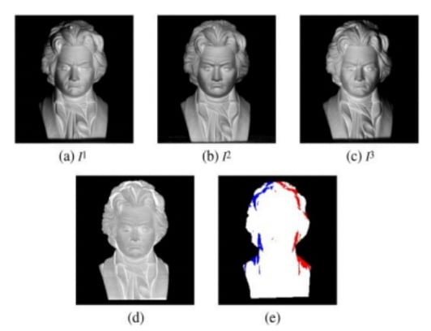

Face Detection & Recognition
A review and evaluation of color-space thresholding techniques for detecting faces in digital images, comparing YCgCr against the more common YCbCr space.
Abstract
Face recognition is a biometric technology used to authenticate identity by analyzing facial characteristics. The process splits into two phases: face detection and face recognition. Two common recognition methods are Eigenface, which uses Principal Component Analysis to reduce the dimensionality of facial features, and Fisherface. This paper focuses on using digital image processing to build a face detection system, reviewing existing techniques along with the challenges and applications of face detection.
Automatic face detection matters because it's increasingly impractical to review large amounts of video and image data by hand, and faces carry most of the identity and emotion information in social interactions. Reliable detection underpins tasks like facial expression recognition, head pose estimation, and human-computer interaction.
Detection and recognition approaches
Face detection splits into three phases: pre-processing (adjusting lighting and cropping to frontal views), classification (a neural network trained to say whether an image contains a face), and localization (finding the exact position with a bounding box based on scale, orientation, and illumination).
- Feature-based methods, like Active Shape Models, locate landmarks such as eyes, nose, and mouth.
- Skin-color-based detection segments skin regions using color spaces like HSI, YCbCr, and RGB.
- The Viola-Jones method and Gabor filters improve accuracy and computational efficiency for feature analysis.
- PCA (Eigenfaces) simplifies data representation by identifying the significant variations across facial features.
On the recognition side, geometric approaches analyze spatial relationships between facial features, while photometric approaches like Structure from Motion reconstruct object structure from images taken under varying lighting and viewpoints.


Method
The detection pipeline starts with threshold-based skin detection. The facial region in RGB training images is manually segmented to establish chrominance thresholds (Cg and Cr), which then classify pixels in new images as skin or non-skin. A training set of 55 images, captured under varying lighting conditions, was used to model skin color, with thresholds characterized statistically by minimum, maximum, mean, and standard deviation.
The paper evaluates the YCgCr color space for this segmentation and compares it against the more standard YCbCr color space, testing both across neutral lighting, sunrise, side-lit, and occluded conditions (sunglasses, scarves).
Results
The YCgCr-based system showed robust performance segmenting face regions across the test images. Selecting the right decision thresholds was the critical step. Adjusting them further, once set, didn't meaningfully improve results. Because the algorithm is simple and fast, it's well suited to real-time applications.
Comparing YCgCr against YCbCr, both color spaces produced similar thresholds for their chrominance components and performed comparably across the tested lighting conditions. Attempts to shift the boundary box in the chrominance plane, including centering it around the red-cyan line where skin values cluster, didn't outperform the original thresholds, though the paper notes further boundary-box tuning in YCgCr as an open direction.